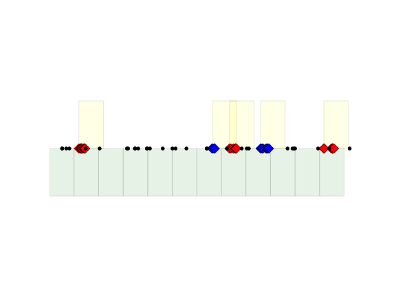
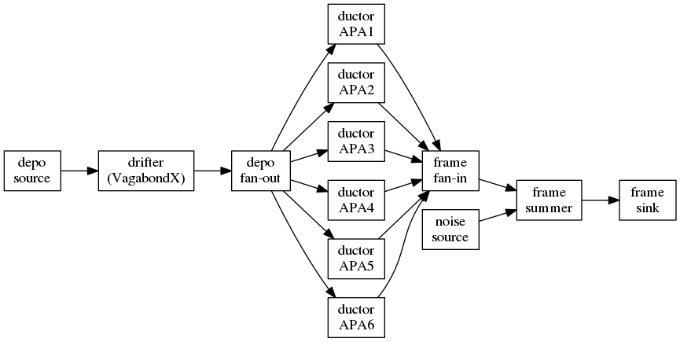

Simulation updates
Despite the lack of news updates, there's been a lot of activity. Hopefully more posts will follow to catch up. For now, some news about WCT simulation.
Release 0.7.0 is focused on the new signal processing technique that exploits compressed sensing techniques (L1 for short, named after the key term in the regularization) and deserves its own post. For here, it was also the first release to include support for WCT simulation. The next big release, 0.8.x is devoted to simulation features, particularly to support multiple anodes (APAs) and two faced anodes.
To track progress toward that release a WireCell GitHub project #1 has been made. In principle, when all the "to dos" are "done" then we will cut 0.8.0. In the rest of this post some of the important changes are described.
Continuous vs Discontinuous
The Ductor and (MultiDuctor, see below) simulation components
operate in either a "continuous" or "discontinuous" mode. Each mode
has a trade off depending on how the user is providing input
depositions.
- continuous
- the
Ductorproduces frames starting at the configured "start time" and a regular intervals according to the "readout time" so that all time is spanned and until the input depo stream is exhausted. - discontinuous
- the
Ductoroperates as above but uses the time of the first deposition to determine the "start time". A corollary of this is that the user may provide subsequent sets of depos, each starting at a different time.
The following figure illustrates the differences as a timeline going from right to left.

The diamonds represent depos for "signal" interactions. Every other interaction is colored red or blue. The smaller black dots represent depos from some "background" event.
The green boxes represent frames made in "continuous" mode and the yellow in "discontinuous" mode. The "discontinuous" frames assume that the "background" depos far from the "signal" depos were not provided by the user. Of course, the user could indeed include these backgrounds and then they'd produce frames but the user must group them somehow into a set of depos when using "discontinuous" mode.
The trade offs between the two modes:
- continuous mode sometimes reads out "nothing" (although "nothing" may mean "just noise" if that's how the sim is configured)
- continuous mode captures all activity.
- continuous mode will split activity which may be from one depo (or from the depos from one track) when it spans the boundary between two frames. This can be seen in the second blue set.
- discontinuous mode will "oversample" time if ever the user provides depo sets which are closer in time than one readout. This can be seen in that the second red set is "too close" to the first blue set.
Which mode is best? The continuous mode is more correct and the discontinuous mode may require less CPU. Some guidelines:
- use continuous mode for simulating full stream running such as for DUNE FD. Framing must still be done but their readout time may be somewhat arbitrary. In any case, consumer of the stream of frames must concatenate them.
- use discontinuous mode with care as a way to focus CPU usage on a'priori known regions of interest of time. Consider to configure the job for a slightly longer readout window than actually desired and then trim the result to avoid edge effects. Take care to avoid the "oversampling" of time as described above. Take care of what depo provides the start time.
Objectified access to data files
Previously, the "wire geometry" and "field response" files were loaded
as needed. This does not scale as each AnodePlane and other parts
need to load the same files over and over. Now, each file is loaded
once in its own component instance and an AnodePlane is configured
to use these components.
The following Jsonnet configuration snippet shows an example (from this test):
local wc = import "wirecell.jsonnet";
local params = import "_params.jsonnet";
local fields_nominal = {
type: "FieldResponse",
name: "nominal",
data: { filename: params.files.fields[0] }
};
local fields_uvground = {
type: "FieldResponse",
name: "uvground",
data: { filename: params.files.fields[1] }
};
local fields_vyground = {
type: "FieldResponse",
name: "vyground",
data: { filename: params.files.fields[2] }
};
local wires = {
type: "WireSchemaFile",
data: { filename: params.files.wires }
};
local anode_nominal = {
type : "AnodePlane",
name : "nominal",
data : params.elec + params.daq {
ident : 0, // must match what's in wires
field_response: wc.tn(fields_nominal),
wire_schema: wc.tn(wires)
}
};
local anode_uvground = anode_nominal {
name: "uvground",
data : super.data {
field_response: wc.tn(fields_uvground),
}
};
local anode_vyground = anode_nominal {
name: "vyground",
data : super.data {
field_response: wc.tn(fields_vyground),
}
};
Interleave different types of field response function sets
The example configuration above shows multiple AnodePlane instances
being configured. This is then used to provide support for signal
simulation in the case where some wires are grounded/shorted or
otherwise have a different field response function set than nominal.
One can think of multiple different universes being interleaved. For the MicroBooNE example in one universe the anode plane has fully nominal field responses, in another, all U-V wires are shorted/grounded and in the final all V-W wires are shorted/grounded. In the real universe we must mix and match each of these three depending on where a particular deposition lands on the wire planes.
To apply these different, interleaved "universes" the MultiDuctor
applies user-configured rules that map a Ductor and its AnodePlane
to each energy deposition. Currently the main rule supported is one
that locates each depo in "wire space" so that one may assign
different field responses to different wires. Extending the example
above:
// The guts of this chain can be generated with:
// $ wirecell-util convert-uboone-wire-regions \
// microboone-celltree-wires-v2.1.json.bz2 \
// MicroBooNE_ShortedWireList_v2.csv \
// foo.json
//
// Copy-paste the plane:0 and plane:2 in uv_ground and vy_ground, respectively
local uboone_ductor_chain = [
{
ductor: wc.tn(ductor_uvground),
rule: "wirebounds",
args: [
[ { plane:0, min:296, max:296 } ],
[ { plane:0, min:298, max:315 } ],
[ { plane:0, min:317, max:317 } ],
[ { plane:0, min:319, max:327 } ],
[ { plane:0, min:336, max:337 } ],
[ { plane:0, min:343, max:345 } ],
[ { plane:0, min:348, max:351 } ],
[ { plane:0, min:376, max:400 } ],
[ { plane:0, min:410, max:445 } ],
[ { plane:0, min:447, max:484 } ],
[ { plane:0, min:501, max:503 } ],
[ { plane:0, min:505, max:520 } ],
[ { plane:0, min:522, max:524 } ],
[ { plane:0, min:536, max:559 } ],
[ { plane:0, min:561, max:592 } ],
[ { plane:0, min:595, max:598 } ],
[ { plane:0, min:600, max:632 } ],
[ { plane:0, min:634, max:652 } ],
[ { plane:0, min:654, max:654 } ],
[ { plane:0, min:656, max:671 } ],
],
},
{
ductor: wc.tn(ductor_vyground),
rule: "wirebounds",
args: [
[ { plane:2, min:2336, max:2399 } ],
[ { plane:2, min:2401, max:2414 } ],
[ { plane:2, min:2416, max:2463 } ],
],
},
{ // catch all if the above do not match.
ductor: wc.tn(ductor_nominal),
rule: "bool",
args: true,
},
];
local multi_ductor = {
type: "MultiDuctor",
data : {
anode: anode.nominal,
continuous: false,
chains : [
uboone_ductor_chain,
],
}
};
The MultiDuctor "chain" works under a "first match gets the depo"
policy. That is, each element of the chain is interpreted based on
the named rule (~"wirebounds"~ here) and if the depo falls in any of
the listed wire bounds then the associated IDuctor named with the
ductor attribute is used to form waveforms for that depo. That is,
MultiDuctor doesn't do any "real" work, but acts as a switchyard to
"sub ductors". It marshals each depo to the appropriate "real" ductor
and then sums all their resulting frames together.
One caution: the field response functions have some extent in channel
(typically +/- 10 wires) and this extent is not considered when a
particular "universe" is selected by MultiDuctor. As a consequence
near the edge of a rule's selection one universe will "bleed" into
another. For example, a depo just inside a shorted wire region will
place waveform following the shorted field response functions onto
channels whose wires should have nominal field response. This edge
case is simply and error of approximation. At some point it may be
demonstrated that this error is unacceptable.
Multiple Anodes
The MultiDuctor above is meant to interweave multiple different
"universes" each containing an instance of the "same" anode plane.
The protoDUNE-SP, DUNE and other detectors have both two faced anode
planes and multiple anode planes (APAs in DUNE-speak). To support
this the AnodePlane and base Ductor required additional changes.
The IAnodeFace now has the method:
/// Return a bounding box containing the volume to which this
/// face is sensitive.
virtual BoundingBox sensitive() const = 0;
The AnodePlane will populate this BoundingBox if the user
specifies a point on the cathode. The result will include also bound
the face's wires. If no cathode point is given then the resulting
bounding box will be empty (BoundingBox::empty() returns true).
The Ductor then uses this information. If the bounding box of the
face's sensitive volume is given then only depositions inside that
volume will be used to produce induced waveforms. However, and
explained next, all depos will be considered in order for the Ductor
to know the "now" time of the simulation.
This change is made in order to support synchronization between multiple parallel ductors which span a detector such as in this illustrative workflow.

Given this, the change can be understood. In order for each APA's "readout" to remain synchronized with those from the other five, some mechanism is needed to provide all with the current time. Passing the same depo to every ductor is a simple solution.
Another change is the new and somewhat oddly named VagabondX
drifter. This drifter is configured with any number of pairs of
anode/cathode planes defined by their global X-axis intercepts. It
can then take any depo in space and properly drift it to the
configured anode plane. The savvy user will then configure this so
that the anode plane coincides with the "field response" plane so that
these two operations are properly stitched together. To the extent
that a detector has co-planar cathode and anode planes, the
VagabondX can handle drifting without any problem. This provides a
simple single-component solution that avoids (for better or worse) the
parallelism which is required downstream. Note, any depos that land
in dead regions between APAs still have a chance to properly be
dropped via the sensitive volume mechanism described above.